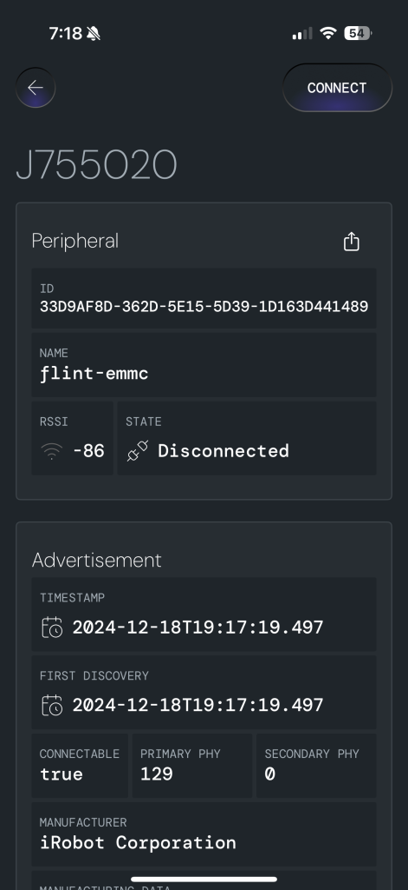
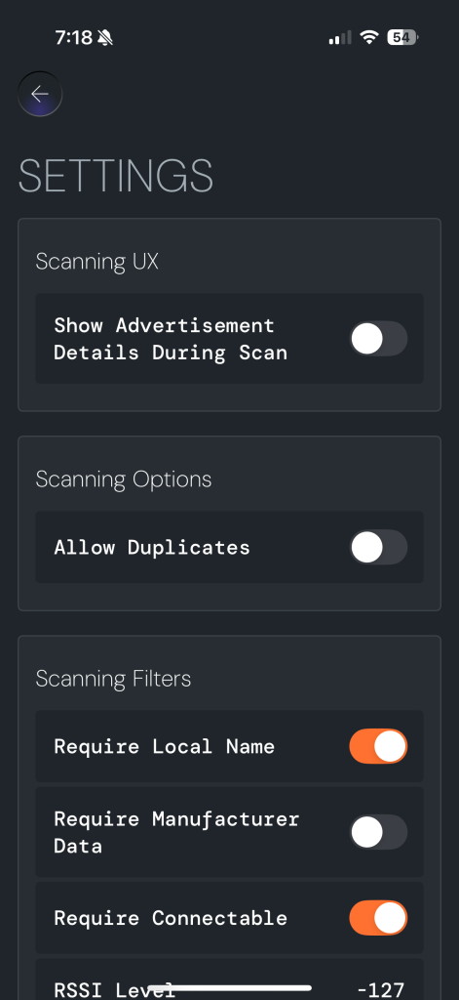
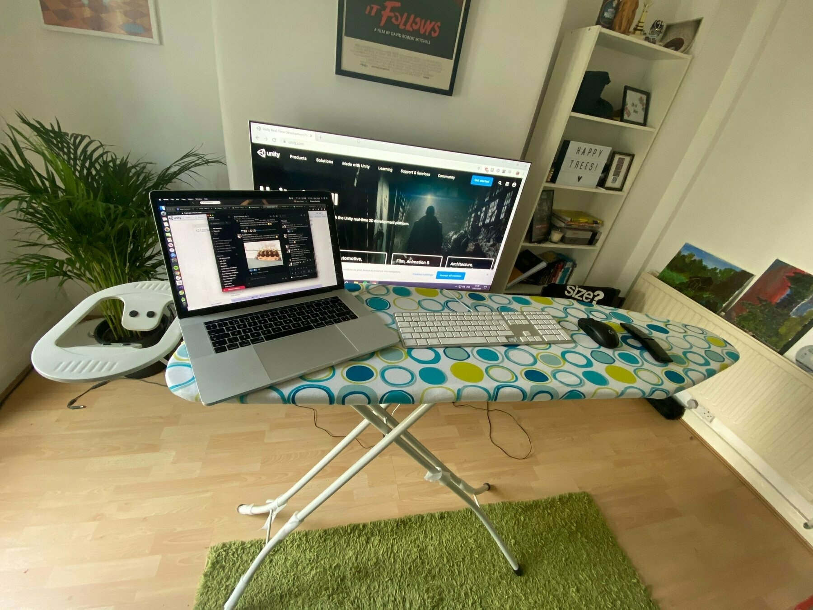

My Blog Is Old Enough To Order a Drink
When I was an undergrad in the early 90's, the Internet hadn't quite hit its stride yet. It was a time of experimentation and discovery. You could totally sense the potential even if you couldn't quite name it yet. As I look at the explosion in AI today, I can't help but feel similarly. Thinking about this put me in a nostalgic mood, and I started to wonder how far back I could look to find my Internet presence.
Thanks to the Internet Archive, I was able to pinpoint my first Web published content to February of 1998. My first Web content is just over 27 years old! That was a really long time ago. Looking at it, I have so many questions for my younger self: Why did I decide to call my site Hazelware? Why did I force a television styled interface onto the navigation? How did I create the navigation graphics? Why does the default landing page feature the disgraced duo of Milli Vanilli?
I wish I could remember more about how I constructed it all, but I do remember why I created it. Every morning when I turned my computer on and logged onto the Internet, I wanted to have a convenient place to go to check all my "daily content." This included online comics, the latest Letterman Top 10 list, any new blog posts by other developers that I followed, and other frequently updated sites that I cared about.
But what about my first blog? I remembered that I eventually tired of having just a collection of links and I got interested in the new weblogs. So, I decided to create my own blogging software on a Linux server in my basement running on an Apache web server and serving content up via PHP – the classic "LAMP" stack. I had never written PHP before so the entire exercise was both educational and fun. This was also still fairly early in terms of blog design, UX and functionality so a lot of what I did was simply copying other designs that I came across adhoc.
This is my little home on the web. I've started to use it as a place to collect some of the things that I have learned and done in regards to programming. Be sure to check out the tutorials as well as the extensive links section.Again, thanks to the Internet Archive, I was able to find my very first weblog post: Wednesday, August 14th, 2002. Honestly, I don't think the design on this looks all that bad. Definitely a little dated, but I wouldn't call it embarrassing.
Submitted on Wednesday the 14th of August 2002, at 08:46
I've since managed to recover most of my old blog content and have been able to give them a home here on Micro.blog. If you're curious, you can browse my older posts on this page. There is still a gap from the original posts in 2002 until I was able to rescue the content in March of 2004, but looking through the missing posts, I'm not missing too much.
So there you have it. I've been blogging for just shy of 23 years, and I fortunately have most of the content backed up. That's honestly a great feeling. I love being able to peek back and see what younger me was thinking or interested in. I've not always been the most consistent blogger, but I'm glad that I've kept at it.
Introducing Silvertooth
 |  |
I'm excited to take the wraps off of a development tool that we've been using internally for years. In the spirit of the holidays, we've decided to release it as a free gift to the community – Silvertooth, a Bluetooth wireless scanner that allows you to connect to, and inspect devices in your physical vicinity.
We created Silvertooth to help diagnose and debug our IOT and wireless apps, and it has saved us countless hours trying to hunt down difficult to find protocol/hardware bugs. Built on our open source UUBluetooth framework, Silvertooth is our gift to the community to install and use, free of charge.
One of the unique aspects of Silverpine is that we are a unique blend of technical prowess and skillful design capabilities. We built one of the first mobile credentialing apps, we have created multiple IOT apps, and we are experts in mobile app development in general. On the design front, we have been building software for small screens since before the iPhone even existed, and we understand the nuances of bringing a brand or design model forward into the mobile ecosystem. With Silvertooth, we are giving an opportunity to see both of these in action.
If this is an area you work in, we hope you find it useful. Happy holidays!
Rowing With the AI Current
There is a lot of hyperbole around AI at the moment, and it can be difficult to sort through the noise. Part of the problem, I think, is that much of the focus has (incorrectly) been on generative AI. People get stuck arguing about how realistic an image is, how good a particular LLM is in generating pictures of human hand, or how creepy deep fake videos are. This is largely a distraction – there's so much more going on than just generative AI! These are amazing times because with the right approach, AI can be leveraged to imagine new products that could not have been built even just a few years ago.
But while it's a radical advancement in technology, it's still just another tool in the toolbox for creating amazing products. At Silverpine, we have embraced it internally as a productivity multiplier in our development process, and a few of our current projects have a significant AI component. However, this doesn't make us an AI company, and in fact, I would argue that a company that claims to be an "AI company" is very likely selling snake oil.
That being said, companies that fail to understand and embrace AI expose themselves to considerable existential risk. The power of AI is a generational leap forward in human productivity. Just like the smart phone, the Internet and the electrical grid, the arrival of AI has the potential to unlock another level in human output. And just like those other technologies, there come with it inherent dangers. However, I firmly believe that in the long run, the benefits will greatly outweigh the costs – there's no sticking the genie back into the bottle.
It feels like there are new discoveries and announcements nearly every day. Personally, I'm positively giddy thinking about the things that can be done that previously seemed impossible. And while the unknown can sometimes feel scary, we will do best if we lean into them. What can we make now? What can we do now? I'm excited to find out. Just remember that your ship will travel much further if you row with the current!
Small Businesses and the Health Insurance Market
As a small business owner, I take very seriously the benefits we offer to our team. Every year, we work with our insurance broker to find the best health insurance plans we can offer at a price point that is workable. Like most companies, we offer full medical, dental and vision, and as a rule, we always pay the premiums for the employee and their family because we just feel that's the right thing to do.
Across all of the insurance networks, the plans more or less look the same - as you progress through the tiers from Bronze to Silver to Gold, the deductibles improve and the maximum out of pocket shrinks. We have been doing this for just shy of 15 years now, and every year, the plans get worse and more expensive. Every. Single. Year. And yet, as we analyze the various plans, we continually find that even our upgraded "Gold" plan is barely more than a safety net for catastrophic or major health events.
We have changed insurance networks 3 or 4 times through the years, trying to offer the best options to the team, but honestly they all seem nearly identical. The thing that's disturbing is that because we are less than 50 employees, we don't have options to simply "buy a better plan" as some might argue. Across all of the markets, we have only one more tier (Platinum) that we could upgrade our plan to, and even that isn't what I would consider a good plan; it's simply more expensive.
These ever rising prices are increasingly becoming a huge driver of base costs for us and other small businesses. Silverpine's employees have a fairly low median age, and nothing about our working environment is even remotely dangerous – we should be an ideal candidate for an insurance company. And yet nobody is competing for our business. Nobody is innovating to provide better products and coverage for us. This is a completely broken industry. Everything about it flies in the face of healthy free market dynamics.
I don't have a definitive, corrective solution to offer – I'm not an economist. But it does seem to me that health insurance is closer to a utility (like electricity or sewer service) and as I mentioned, the tenets of capitalism don't seem to apply to it. Outside of a stock price, it barely functions as an industry and quite frankly, the entire situation is bad for American businesses, especially small businesses, like ours. Something needs to change because health insurance is not only broken for the insured, it's also broken for most of the companies that cover the lion's share of the cost of that insurance. It's time for a change.
Tools For a Distributed Software Agency - 2024
Originally inspired by Justin Williams, I try to spend some time at the end of every year reviewing and describing the various tools and software that we use at Silverpine. This is now my fifth year doing this type of retrospective. If you're interested in the previous posts, you can find them here:
We are a mobile-first software design and development agency, and as such our tools generally fall into three general buckets:
- Communication
- Development and Design
- Operations
I try to be as exhaustive as I can in my list, but every year I seem to forget something. If you don't see something that you would expect to see, please reach out. Also, if you have suggestions for alternative tools, I'd love to hear about them. We are constantly trying to refine our toolset.
Communication
Slack - As a fully remote organization, I don't know how we would operate without Slack. Our usage has continued to grow as we now regularly use Huddles, Notes and Canvas in addition to the core messaging. With almost 10 years of searchable Silverpine chat history, Slack is an absolutely indispensable part of our day-to-day operation.
Zoom - There are lots of options for video-conferencing software - from Teams to Google Meet to WebEx. We have used the vast majority of them and repeatedly, Zoom is still slightly better than the competition. However, I will note that our usage has drastically fallen as our usage of Slack Huddles has sky-rocketed. That being said, whenever I need to chat with someone outside of the company, I still turn to Zoom.
Google Workspace - We regularly use Docs, Sheets, Drive and Gmail. They work and are fine. There's nothing particularly special about them, although I do find that Drive doesn't work nearly as seamlessly as Dropbox.
Dropbox - We barely use Dropbox, but we have enough legacy documents that we have a couple old accounts still hanging around. If Dropbox had better pricing for small teams, we would probably use it over Google Drive, but Dropbox is pricey enough that we can live with the deficiencies of Drive for our team sharing.
Keynote - One tool that I use frequently (and that I seem to have neglected mentioning in past years) is Apple's Keynote. Nearly every presentation I create is done in this tool. It's just so much easier to use than Powerpoint.
Operations
Harvest - Many people use Harvest for time-tracking and while it's a great tool for that function, we use it for invoicing clients. It has a pretty great search and history function. My only wish is that it had better visual reporting capabilities.
Gusto - We have been using Gusto for payroll for years. In general, we still are big proponents of it, but their service has fallen off quite a bit the past couple years. We pay for their Plus level service, and even with an elevated service level, it still takes too many calls and emails with an offshore representative to get things resolved.
Quickbooks - We use Quickbooks, and since the CPA propped-up monopoly shows no signs of cracking, you probably should use it too.
Adobe Acrobat Pro - Adobe gets a lot of heat for some of their licensing decisions, but using Acrobat Pro to handle our document digitization hasn't been a difficult choice. Whenever we need to add signatures to paper documents and create digital versions of them, Acrobat just works.
Excel - As mentioned previously, we pay for the Google Workspace suite of products. And while I do use Google Sheets frequently, I still prefer the offline capable, familiar warm embrace of Excel. You might disagree, but to me, it is the embodiment of what a spreadsheet application should be.
Development and design
Xcode - If you write iOS or Mac software (as we do) using Xcode is really the only option. I know that some people have hybrid setups with alternative text editors, and while I won't judge those people, I really do think it's just easier to use Xcode. However, I do wish Apple would focus a bit on stability and performance instead of adding features.
Android Studio - I don't personally do Android development, but I know that our Android engineers use Android Studio. It's free so I don't mind, and it sounds like there's not really a better alternative.
VS Code - It is remarkable how good VS Code is given that it's free and offered by Microsoft. Our engineers use either this or Nova for any non-native projects.
Nova - I've used Nova a few times and it's fairly intuitive and has a large, well supported plug-in architecture to a diverse set of development environments. It's a very viable alternative to VS Code, and while it isn't free like VS Code, it does have some advantages. Panic makes great products.
Tower - We don't mandate a Git client at all, but we do provide a "default" for the team. Tower is always improving and the fact that it's cross platform really seals the deal for us.
GitHub - Every now and then I am forced to use Bitbucket, and it makes me appreciate GitHub. We've been slowly moving more of our CI infrastructure into GitHub Actions as well.
Figma - The current reigning champion of wire framing and design is Figma. I was quite relieved when the Adobe acquisition fell through.
OmniGraffle - I don't love OmniGraffle, however, if you need a Visio-equivalent tool for the Mac, there aren't really many options. The interface is a little off-putting and difficult to learn, but it does what I need it to do. I really wish Microsoft would create a Mac version of Visio though.
BBEdit - I don't personally use BBEdit, but a huge number of our team does. Primarily, they use it for large file manipulation and inspection as well as just a general quick "scratchpad" for writing and note taking. It's tremendous how long BBEdit has been around and that it's still a daily driver for so many people.
ACS Europe 2024
This summer, I had the pleasure of being invited to speak on a panel at ACS Europe, which is a global conference for the access control industry. The conference was held at Google's facility in Zürich, Switzerland. The entire event was invigorating and exciting as competitors and partners alike all met and discussed the industry and where we see it headed. I was thrilled to represent Silverpine and bring my own sliver of perspective to the conversation. Below is a short clip of part of my time on the panel.
Tools for a Distributed Software Agency - 2023
It's time for my annual reflection on the tools that we use to power Silverpine. I've been posting these for the past few years and it's always an interesting activity to see how things change over time. You can see old posts here:
Overall, we have continued to consolidate our tools, which is good from a financial perspective. One notable tool that fell from the list this year is Squarespace which we previously used to host the Silverpine website; we rewrote our website as a native front end hosted on AWS which allowed us to drop it from our monthly costs.
While tool consolidation feels good, I do worry that it can potentially lead to a lack of innovation. For the past few years, a lot of change has occurred in the design space (Sketch, Figma, InDesign, etc) and it felt like there were a lot of improvements being made amidst healthy competition. But this past year, that has slowed way down. Even amongst teleconferencing software it feels like things have mostly collapsed to a primary three options. I sincerely hope that 2024 will bring with it some overdue disruption into the tools ecosystem. I am definitely ready to try something new!
Communication
Slack - If we could pick only one tool from this list, it would be Slack. For any distributed team, Slack is absolutely essential. One thing that I did notice that changed this year is that our team took advantage of Slack's "Huddle" feature far more than in years past. We pay for Zoom as well, but it's much easier for team members to quickly jump into an adhoc call and do some screen sharing if they don't have to leave Slack. Definitely a much used feature.
Zoom - There are three main options for teleconferencing (Google Meets, Zoom and Microsoft Teams) and while none of them are perfect, Zoom still seems to work better across various hardware configurations than the others.
Google Workspace - Google Workspace replaced Dropbox for our team last year and for the most part it hasn't impacted us much. It's a fairly economical option for email and shared storage and while the shared storage functions aren't as robust as Dropbox, it works well enough.
Development and Design
Figma - Last year we moved fully to Figma (as did most of the industry) and it's been great. I'm feeling relieved that the Adobe acquisition/merger fell through because Figma is one of those pieces of software that almost feels magical, and I was worried that Adobe would kill that feeling. Everyone from designers to developers to clients (viewing prototypes) extolls how simple and accessible it is. It's just a fantastic tool.
Github - There's not a whole lot to say about Github. After Microsoft purchase it, they've mostly left them alone to flourish. We use it for the obvious code repository features, but we also use Github Actions for our CI (continuous integration) tooling.
Tower - We moved to a team subscription for Tower a few years ago and haven't looked back. Their level of support and continued feature improvement have made it the de facto GUI for source control. Our team works on a myriad of platforms and Tower is well supported on all of them.
Jira - If you use Jira, you know why you use it, and you'll probably agree that it's "fine". That's really all I want to say about it. Nobody loves Jira, myself included.
Operations
Quickbooks - Is there even another option for keeping your books that isn't some sort of Oracle installation? Quickbooks works well for what we need. The CPA and bookkeeper are glad we use it. I guess that means something.
Harvest - We use Harvest for invoicing clients and a small amount of time-tracking. We've been pretty happy with it. The reporting tools make it easy to understand cashflow and to understand when invoices are late.
Gusto - If you need to pay employees or contractors, Gusto is fantastic. One small change from last year is that we upgraded to Gusto Plus and it has made a huge improvement in their customer support. We have employees in multiple states that all have unique tax and reporting requirements so moving to Plus has been invaluable. It's more expensive than the base plan but definitely worth it in terms of reducing headaches.
Adobe Acrobat Pro - We actually have been using Acrobat Pro for years; I simply missed including it in past years. As an agency with numerous clients and prospects, we are frequently dealing with NDAs, MSAs, SOWs and various other legal documents. Acrobat lets us easily deal with whatever form we receive and sign/counter-sign them. This is one of those tools that "just works."
Evergreen.ink
I'm super excited to announce the public beta period for Evergreen.ink, our interactive fiction authoring tool. If you already are familiar with interactive fiction and/or Evergreen.ink, feel free to just head on over and start creating! If you want to know more, read on!
Interactive fiction is content that falls somewhere between a game and a story. It reads like a novel, but the reader gets to help determine the flow and content. One of the most common forms of interactive fiction is "choice-based interactive fiction." If you've ever read any of the classic Choose Your Own Adventure books, then you've read interactive fiction. This is the foundation of what we have built with Evergreen.ink.
We have already launched a series of titles that are built using the platform. While working on the content for these titles, we realized that the authoring system we were building is something special, and that it has utility outside of our internal needs. We decided to open up the platform more broadly. The user experience of Evergreen.ink is incredibly intuitive, but it belies the powerful Sapling scripting engine that hides just under the surface. Authors can write either narrative content, or they can dip into the more advanced features and add truly intelligent behavior to their stories.
The platform is targeted toward choice-based interactive fiction intended for reading on mobile devices. This is a recognition that the mobile reading experience is one that will reach the broadest audience, and as a result, the default playback and reading experience is tailored specifically for small-screen devices.
We have begun work on a native viewer as well that we plan to launch it in Q1 2024 in the Apple App Store and Google Play. Our end goal is to help authors easily write interactive fiction stories and to eventually provide a platform for monetization. Already, content authored in Evergreen.ink can be played back in a web browser or via uploading to Itch.io where authors can monetize their stories.
Interactive fiction can sometimes seem like a novelty, but as a media platform, it has a huge amount of untapped potential. We hope that Evergreen.ink allows authors the freedom to stretch their imaginations, and we look forward to seeing what people create. This is just the beginning of the journey for the platform; we have a lengthy product roadmap and are excited about where we are headed.
Ok, that's a lot of words, but since we're talking about an interactive platform, how about an example? One of the first titles we created was a short take on The Picture of Dorian Gray by Oscar Wilde. It's a quick, simple example of what Evergreen.ink can do. You can check it out here: Mystery at Gray Manor.
We hope that Evergreen.ink is useful to creatives that are interested in discovering a new platform. We hope that the tool fades into the background as authors simply do what they do best: create.
(If you're interested in finding out more, please don't hesitate to contact me or to join the Evergreen.ink Discord.)
Tools for a Distributed Software Agency - 2022
Silverpine has been a remote-first company since we started work over a decade ago. Our tools are critical to us performing at a high level, so we are constantly evaluating which ones we use. The last couple years I've posted about the stack we use and this is our updated list for 2022. Previous years' versions of this post are here (2021) and here (2020).
The following list represents the software that powers our business. (I have intentionally omitted some of the lower level development tools like Xcode and Android Studio.)
The list is broken into three primary classifications: "Communication", "Development and Design," and "Operations and Finance."
Communication
The heart of our business is Slack. I'm not sure how you could do remote work as a team without a tool like Slack. It's easily the most important tool we use, and we use it constantly. Recently, some of our clients and peers have moved to Microsoft Teams, but for us, Slack just works so much better and is less clunky and onerous than Teams.
When the pandemic started, Zoom catapulted to the forefront of video conference calling because it was so simple and easy to use. Like many other companies, we made the switch and since then, it's been a pretty solid workhorse for us. Just like Slack, however, some of our clients have moved to Teams for teleconferencing, so we definitely use it on a regular basis. However, Zoom continues to be easier to use and it has a better integration with Google Workspace which is also important to us. That being said, I can envision a future where we move to Google Meet because of cost and integration considerations, but for the foreseeable future, Zoom is our tool of choice for meetings.
As I just alluded to, Google Workspace is another critical piece of our infrastructure. It's what we use for email, calendar/scheduling, document creation and (as of 2022,) file storage. We have been using Google for email since we started and over time, they have improved their offering and earned more of our business. Most recently, we ditched Dropbox for shared file storage and moved everything to Google Drive. I still feel that Dropbox is slightly easier to use than Google Drive, but the integration and cost advantages of Google Drive give it the clear edge.
Development & Design
This year we (like many other agencies) consolidated many of our design tools into Figma. In past years, our design stack was Sketch + InVision + Zeplin, however this year that has all collapsed into Figma. This has made us more efficient, and from a cost and licensing perspective, we're actually saving money. Now that Adobe has acquired it, we sincerely hope they don't ruin what an amazing product Figma is, but we'll keep a close eye on it.
If you asked me to name another cloud based source control platform, I'm not sure I could. Github has a monopoly in this space, but fortunately, they seem committed to continually improving and expanding the feature set. As an example, because of changes and additions to Github's "Actions" tools, we have fully moved our CI (continuous integration) processes to Github. If you are still using another platform for CI, I strongly recommend you take a look at what Github is doing here.
There are plenty of Git UI tools, but after using Tower for the past six years, we feel like it's the best option for agencies like Silverpine. It is available on both Windows and Mac, and the Tower team is constantly rolling out new versions and features that add real quality of life improvements. Additionally, their licensing scheme is very cost effective and works well for our model.
This year marked a change for us for our choice of defect tracking software. After resisting Jira for many years, we finally took the plunge and it turns out that Jira is....ok? It definitely still has warts and isn't perfect but Atlassian has made enough changes over time to make Jira a palatable choice. I still feel like there is a big opportunity for someone to shake up the world of defect tracking but for now, Jira is what we're using.To me, using Jira feels like the old saying "Nobody ever got fired for buying IBM."
We started using Miro a little bit in 2021 to do shared planning and strategy design, but really got into the groove with it this year. It's a very easy to use shared whiteboard app and falls into that category of "it just works." Every time I use it, I always think that I should use it more. I'm a very visual thinker, and with remote teams, Miro really helps me communicate what my words often can't. If you haven't tried it, I highly recommend checking it out.
Operations & Finance
We use Quickbooks for our finances. It's what our bookkeeper and our CPA want us to use. It's fine.
I know that many people use Harvest for time tracking, but we actually use it for sending and tracking invoices to our clients. Harvest has a pretty robust set of invoice functionality that I think gets overlooked because of their focus on time tracking. This is another tool that just works the way you expect it to, and we don't have to think about it.
When we first started using Gusto, I couldn't say enough nice things about the platform, and all things considered, it's still a quality payroll system. They are quick to integrate state and local tax changes and using them to pay contractors is incredibly simple. I do worry that they've grown to a size that their customer service has suffered a bit, but hopefully they can iron out the kinks as they continue to grow.
We use Squarespace to host our company website. If you need to get a decent website built quickly, it's not a bad route to go, but given that we build websites for other people, I don't love this. I expect this next year, Squarespace will be dropping off this list.
The End
Today, my youngest will attend school for the final day. For fifteen years, we have woken them, dressed them, fed them, and helped them get out the door. After today, we are done.
The bittersweet is overwhelming me.
For Sarah, Rachel and April
{kind=link}
Twenty five years ago, I was celebrating my 21st birthday with my college roommates. However, I received a call from my dad that abruptly ended the celebration. My cousin and her three young daughters had been murdered by their father; one of them in the arms of her grandmother who was trying to protect her. He had purchased a gun in Seattle and then drove down to Oregon and shot them in their front yard. The oldest had just come home from her first day of kindergarten.
My dad picked me up from my apartment, and we drove down in silence to my great-grandmother's house. The extended family was gathering to be together and to try and understand what had happened. Twenty five years later and I'm still not sure any of us understand. Can you ever really understand something like that?
Today, an eighteen year old kid murdered twenty-one people in an elementary school, and those memories have flooded back to me. I can remember that night like it was yesterday. As I try to process this horribly tragic event, I am sickened by my emotions. They aren't the emotions that I should be feeling. I'm not feeling anger; I'm feeling resignation. I'm feeling a disappointment in myself because I cannot muster the outrage that the murder of children should evoke.
I don't want this to be normal in the world I live in. But I find that anymore I simply feel helpless. I know that deep within I still have intense feelings of anger, but over and over and over and over again that rage runs headlong into the hopelessness. It just hurts too much.
We should be better. But we aren't.
I'm sorry Sarah, Rachel and April. We keep letting you down.
A Year of Holidays
If you follow Silverpine on any of the major social media platforms (LinkedIn, Twitter, Instagram, Facebook) you may have noticed that our logo tends to change around many of the holidays. For the past year, our amazing art director, Nicole Levin, has been creating mini-masterpieces that help us celebrate many of the holidays that Silverpine employees observe.
There are a couple reasons why we did this. The most obvious one is that it's fun! It's been a very rewarding exploration of using our logo in the context of a wide variety of different types of holidays. I've had many people internal and external comment about how much they enjoy them. However, we also did it as an exercise and demonstration of the intention of the Silverpine brand.
These holiday logos are a demonstration of the meaning behind the Silverpine brand. I've always envisioned it as an amplifier for other brands — Silverpine augments and amplifies, but never gets in the way. This logo exercise is a small attempt to illustrate that concept.
{kind=link}
Nicole and I have already discussed adding more holidays to the mix over the next year, and perhaps even tweaking or improving some of the past ones. Have a favorite? Let us know which ones you like! My favorite is definitely the Halloween spider pictured here.
Silverpine - The First Decade
{kind=link}
It was 10 years ago this month that Silverpine was founded. Neither Ryan nor I had a plan when we set out. All we knew was that we wanted to build iOS and Android apps for other companies. We had been creating applications for small form factor devices for a long time, and we knew we could use that to help others — the "app revolution" was underway, and we wanted to be a part of it.
In the early days, we took every project that came our way. It was just Ryan and me, and we needed to find a way to pay the bills. Looking back now, it is clear that we had no idea what we were doing, and we were very fortunate to survive. But in some ways it was easier. When I would explain to people what Silverpine was, I would just say "We build apps for other people." It really was as simple as that. Me. Ryan. Coding away on projects that we had probably vastly underbid. I honestly have no idea how we made it.
But we did make it! And one of the more important things we did during the early years was to develop a few core principles that run through the company today:
- We wanted control over our schedules, and we wanted to have the kind of flexibility that neither of us felt we had in our previous jobs. We both had young children, and it was important for us to be able to be present in their lives. In a practical sense, this meant that we were committed to being a remote-only company from day one. After nearly two years of a global pandemic, most people look at that aspect of our company as a positive benefit (and it is!). But before COVID, when I had conversations with potential clients I could often sense in their replies that they doubted we were a "real" company. I don't know that we ever lost out on any projects because of this, but I felt that it added a level of suspicion to our conversations. Nonetheless, we held fast to our dedication to remote work.
- We wanted to work specifically on mobile technology. We didn't want to just be developers for hire; we wanted to use our expertise in the projects we worked on. Over the past 10 years we have had many different people approach us about building websites, and we almost always turn them down, particularly if there isn't a mobile component to it. There are thousands of development shops that do web development, and that's just not who we are. Ryan and I have been developing software for small form factor devices since the early days of the Palm Pilot. We have a deep understanding of the implications and limitations of designing and developing for mobile devices. Silverpine was and is a mobile-first company.
- We didn't want to grow the company unless we absolutely had to. When I left my previous job, I managed around 200 developers across several different sites, and I hated my life. Some days, I would be on the phone from six in the morning until seven at night. With Silverpine, neither Ryan nor I wanted that type of lifestyle. We knew that one of the primary factors influencing our work/life balance would be the size of the company. We have known many different people and companies in the consulting space that have grown quickly, only to burn out and eventually fold. We wanted to avoid putting on wax wings at all costs. I know that some people equate growth with success, and those people will probably never understand the concept of constraining growth as a tenet, but I can honestly say that I haven't regretted this choice for a second.
Even with these principles as our foundation, we have grown, and we have changed, significantly. The funny thing about building things with your clients is that if you do great work, you end up repeatedly working with them to the point that things become more like a partnership. And the one thing you absolutely need in a partnership is trust. At about the five year mark, we realized that our business started changing — our clients had developed an immense trust in us. As a result, we started taking on more and more of the breadth of work in our projects, including the strategy, scoping, and the UX/UI work. Without realizing it, we had pivoted to become an agency rather than a "dev shop".
As we continued to evolve into an agency, we began to help our clients at a much deeper, more meaningful level. While we were still building great apps, we now found ourselves consulting on strategy and designing the user interfaces that we would be building. This is the point where we were able to truly showcase and highlight our understanding of user experiences on small screen devices.
It's also the point where we had to confront growth at a much more significant scale — instead of just being a company of developers, we now had to become a company of developers, project managers, designers, QA, etc. We had to evolve to be able to take on all phases of a project from conception all the way to production. This forced us to do some difficult soul-searching. At the end of the day, we had no choice but to bring on more people, and I'm incredibly glad that we did! Silverpine now has some of the most wonderful folks that I've ever had the pleasure of working with. Across all of our disciplines, we've been incredibly fortunate to grow with people that share our company values.
And this brings us to the end of our 10th year — where we find ourselves today: Silverpine is an amazing group of 20+ people working 100% remotely with some amazing clients and partners. We are an agency that is involved in the many different aspects of strategy, design, and development. We are an agency that creates interfaces that make people smile. And ultimately, we are an agency that helps our clients bring value and meaning to their products and brands in ways they never imagined.
I feel incredibly fortunate and privileged to have had the experiences and professional relationships these past 10 years. If you're reading this and you've worked with us or along side us, please know that I am deeply appreciative of the time that we have journeyed and will journey together. For me, it has always been about people and relationships. Without our people, Silverpine would be nothing.
So where are we headed? I truly don't know! I have some guesses, but I have no idea if they are correct because the one thing I have learned is that I don't know nearly as much as I think I know. However, just as we did for the first 10 years, I'm sure that we will continue to change and evolve.
Thank you.
AirAware!
Ever since the incredibly awful fires/smoke that we encountered in Portland in September of 2020, I've been thinking a lot about the environment on a very local level. I fully admit that I was caught off-guard by my first climate related emergency, and I learned quite a bit about air quality terms like AQI. I also discovered some of the various monitoring networks with publicly available data, and sort of developed an itch to participate in some of them. One aspect in particular that surprised me was how awful the air quality inside my home became. I also realized that while the air quality networks could tell me what the outside AQI was, nobody could tell me what it was inside. So, I eventually purchased an Awair Element to put in my office to help me keep an eye on it. Of course, being a tinkerer, I couldn't help notice that Awair provides an open API for connecting to and monitoring their devices. And so, what would eventually become AirAware was born!
So, after a couple weeks, I had what I felt was a pretty decent reusable framework for iOS to connect to and fetch data from Awair devices. But by then I had an itch. I felt like I had just scratched the surface of what could be done. So after a bit more Googling, I found a number of other devices and networks that allow connecting to their APIs, and I decided to pull them into AirAware as well. In the end, I decided to add support for an initial 5 devices/networks:
- Awair indoor monitoring devices
- AirNow, the EPA's public outdoor AQI monitoring network
- PurpleAir's outdoor monitoring network
- WeatherFlow's family of Tempest weather monitoring devices
- OpenWeather's weather monitoring network
There are potentially other devices and networks that I would love to add support for in the future, but for an initial release, I felt like this was sufficient.
Now, I will stop here and say that I love making frameworks and libraries for other developers. I feel good when I make something and can put it out into the universe to potentially help other people. That being said, will anyone find this useful? Will it help anyone? I have no idea, but that's ok! The point is that AirAware now exists and is available if anyone ever wants to add air monitoring functionality to their app, or if they just want to see a reference implementation for any of the supported devices/networks.
Technical Notes:
- AirAware is available directly via Github (https://github.com/cheesemaker/airaware) as well as through the Swift Package Index (https://swiftpackageindex.com/cheesemaker/airaware) and fully supports Xcode's Swift Package Manager.
- AirAware supports Swift 4.0 and greater
- AirAware requires iOS 13 or macOS 10.15
- AirAware is released under the MIT license
Tools for a Distributed Software Agency - 2021
Last year, I posted an overview of the tools that Silverpine uses, and I thought it might be interesting to revisit our toolset and compare with where we are versus where we were. Many of the tools continue to be the same, but there are a few changes. Read on for the details!
Communication Tools
Without a doubt, Slack is the single most valuable tool for us as a distributed company. One thing that has changed over the past year, however, is that almost all of our clients have now adopted Slack as well. This has been a great improvement as we can now utilize shared channels between workspaces which greatly reduces clutter and overhead. This has allowed us to stay mostly within the Silverpine Slack workspace which makes everything simpler and cleaner in terms of organization and tracking conversations both internal, and external. If you're new to Slack, or have yet to try it out, I have a few posts here and here to help you get going.
Looking back to where we were last year, it's clear that teleconferencing technology and tools have rapidly improved. This is one of the few silver linings of Covid. I've never held video conferencing software in very high regard, but I can definitely say that the tools have gone from incredibly awful to "ok". And to that end, Zoom has definitely moved the quality/easy of use bar further and faster than the competitors. We will see if Zoom can keep the crown in the coming year as Teams and other platforms try to leapfrog it. For now, however, Zoom is the best, easiest to use tool for video conferencing for our business.
Last year, we standardized on Dropbox Pro for file sharing and quite honestly, it's been so seamless to our workflows that I sometimes forget about it. I'm still surprised that Apple or Google haven't acquired Dropbox yet, but I have no complaints. It just works.
We use Gmail for our email, and thereby get all of Google Workspace (formerly known as G Suite). I said before that I'm not even sure where I would look to replace the email side of the tools, and that still applies. This past year, however, we have also started using more of the other Workspace tools (Sheets, Docs, etc) but we definitely haven't standardized. Most of the tools are convenient simply because they are ever-present, but if you need to create a document with a significant amount of formatting, you'll want to look elsewhere.
Development Tools
We have looked at a few alternatives to Github (like BitBucket) but at this point, GitHub is pretty much the de facto standard for source control systems. I will admit that I was a little nervous when Microsoft acquired them, but quite frankly, their service has improved to the point that we now use them for both source control and for our automated build system through GitHub Actions. Their cost model is also very helpful to us now that it's seat based rather than project based.
The choice of a git tool can be fairly controversial, and we will never mandate a particular app/tool, but we have found that, overall, Tower is a very good, stable, and constantly improving product. They have versions for both Mac and Windows, and their licensing model makes it easy for us to provide seats to any of our engineers that want to use it. I wouldn't say that it's a perfect piece of software, but it's definitely better than using the command line. We're not barbarians!
Of all the tools on this list, MantisHub is the one that I'm the least confident that we will still be using a year from now. MantisHub is a fairly inexpensive, hosted, bug tracking system that's based on the open source Mantis platform. It has replaced Lighthouse which we previously used. We made the decision to replace Lighthouse because it has fallen into abandonware status, and lately hasn't been able to provide the workflow that we need. I wouldn't say that I love MantisHub, but it's not as heavy as Jira and definitely less expensive. We are continually looking to improve our bug tracking system so if you have one that you like, I'd love to hear about it.
Design Tools
Sketch has owned the "non-Photoshop" tool space for years, and it remains the default/standard for our designers. Sketch is a familiar, comfortable, design tool that does what it needs to do. The licensing and cost model work amazingly well for an agency and while I wish that their administrative tools were easier to use when managing seats, it's not something we have to do often. While we were still a Sketch shop this past year, it's possible that the winds of change are blowing. We've been having internal conversations recently about switching to Figma which has quickly emerged as the cool, new kid on the block. I've used Figma a bit and its collaboration tools blow Sketch out of the water (at least at the time of this writing.)
I believe I overlooked our use of Zeplin in my previous tool list. That is a fairly significant oversight on my part! We've been using Zeplin for years now and I don't see that changing any time soon. Zeplin is a very robust tool that engineers and designers can use to easily export image assets out of Sketch (or Figma) and import directly into project workspaces. Zeplin provides that "last mile" in the asset pipeline and supports exporting for web, iOS or Android, each of which have differing format requirements. We love Zeplin!
A critical part of our development process with clients is our prototyping phase. We work extensively with them to help them understand how the UI that we are designing will translate into UX. Particularly when working on mobile platforms, the interface really needs to "feel" right, and InVision is the prototyping tool that we utilize.
Operational/Finance Tools
Like nearly every other small business in the U.S. we use Quickbooks to manage our finances. I don't have a lot of good things to say other than the fact that our CPA prefers us to use Quickbooks.
Silverpine's web content is fairly static, and in general our web traffic is very low. I think it's mostly visited by people who are curious about who we are in the hopes of potentially partnering with us on a project. To that end, we don't really need much in terms of web hosting, so we use Squarespace. One of the best things I can say about Squarespace is that it is easy to get a decent looking web page up, quickly. They have a plethora of templates and basic customization is very easy. If you start wanting to get fancy, though, it gets incredibly clunky, quickly. It's also slightly expensive in comparison to some of its competitors. That being said, we've been using it for years now without too many complaints.
One new addition/change to our set of tools is that this past year we dropped Blinksale and replaced it with Harvest for invoicing clients. A lot of people use Harvest for time tracking, but it also has a good set of invoicing tools and reports. Both Blinksale and Harvest are good tools and are fairly similar in terms of cost, but Blinksale seems to cater its tools more towards freelancers and less towards agencies. Harvest seems to do a better job of catering to both groups, and it's made our invoicing processes much easier this past year.
People like to get paid. That seems to be a nearly universal truth, and for us, Gusto is how that happens. We've been using Gusto for quite a while now and they have done a fantastic job at continuing to roll out new features and products that really complement their core offering, which is payroll. We use Gusto for both employees and contractors, and I haven't heard a single issue about it. Gusto does a really good job at tracking taxes and tax reporting for federal, state and most local requirements and many times they will pro-actively alert us about upcoming changes. On top of that, their customer service is very responsive so when we do have questions about things, they get back to us quickly with real answers. Gusto is fantastic.
Do You Need A Website?
TLDR; Yes you need a website, and we just redid ours! Check it out! https://silverpine.com
Many years ago when Ryan and I were bootstrapping Silverpine, we ran very lean. I'm talking bare-bones lean. Some would say that we ran on a shoestring budget, but quite honestly, I doubt we would have justified the purchase of a shoestring at that point.
During that period, we were starting to develop our client base and define who we were as a company, and we didn't give much thought to our website. At that point, if I remember correctly, we hadn't acquired the silverpine.com domain, and we only had silverpinesoftware.com. The site was comprised of a single web page that said "SILVERPINE SOFTWARE" and it had a mailto link at the bottom (for anyone that was so impressed by our invisibility that they might want to contact us.) Our focus was on mobile development at that point, so we figured that it didn't really matter if we had a web presence.
However, our clients noticed. I clearly remember receiving a phone call from our primary contact at Very-Large-Corp. We had just signed a contract with them to do some work and had jumped through the hoops to get Silverpine into Very-Large-Corp's invoicing system. He called me because he was very concerned that if our invoices showed up on reports it might prompt people to investigate us a bit. If they wanted to know more about us, they surely would go look at our website. If they looked at our website, they would question whether we were an actual company. This could potentially raise some red flags with people within Very-Large-Corp and cause him (and us) trouble. I remember his words very clearly: "I need you to put up a real website as soon as possible."
So, I spent that weekend creating a very bland website that was mostly populated with stock images. It wasn't pretty. It wasn't amazing. But it was a real website. We were somehow legitimate at that point.
However, time marches on and as it does, websites age and look crustier and more stale with every passing day. To that end, we decided that in 2020, we would give silverpine.com a facelift and in the process better showcase who we are and what we do. Conceptually, Silverpine embodies something that is clean, sleek and entirely complementary. The design of the website is intended to demonstrate this visually and show how a variety of strikingly different designs all work with Silverpine. The intention is that we enhance and improve existing brands and products and hopefully it's now clear, visually, how we do that.
What we have today is amazing and I love it, but it's also just the start. While we very often cannot talk publicly about many of the products we work on, we can add more content that continues to explain and expand on what we are and how we do it. The new website design provides a framework and a roadmap for adding and enhancing this. I'm extremely excited to grow the content so keep checking back from time to time, and if you haven't already, go take a look!
Oh and if you wanted the answer to my question? Yes, you need a website.
Apple's Native Apps Trojan Horse
Apple announced SwiftUI at WWDC 2019 and like a lot of people, I mostly ignored it because I knew that it would need some time to mature before it would be ready to use in production software. I also wasn't sure if it would "stick" in terms of long term, viability. However, after another year of development, it's clear that Apple has made a commitment to it. The newly announced Widgets and App Clips as well as enhancements to WatchOS definitely push developers hard towards SwiftUI.
SwiftUI appears to be Apple's answer to the React programming movement, and given the similarity of SwiftUI to React, I expect a lot of the response will be positive. However, I believe this to be a bit of a Trojan Horse in relation to cross-platform development. As I mentioned earlier, apps that want to use some of the newer technologies, like Widgets, have no choice but to use SwiftUI. For an app that's written natively in Swift, this will be easy. Apps written in cross-platform environments will have to work a lot harder.
Eventually, Widgets and App Clips will become expected functionality for many apps, and while most cross-platform solutions already support mixing native code with non-native code, the level of complexity of supporting these will essentially require developers to be fluent in multiple languages and multiple development environments. I'm very curious to see how these cross-platform development communities respond and adapt to this change because over time this will erode one of their key advantages.
Zoom Insecurity
I recently wrote a roundup on the current state of video conferencing software and one of my comments about Zoom was that it has a history of abusing privacy and not taking security seriously. It looks like my concerns were well founded this week.
- According to The Washington Post, your Zoom videos are visible by anyone on the Internet
- Security expert Bruce Schneier explains how Zoom not only captures and stores personal data about you, it "secretly displayed data from people's LinkedIn profiles, which allowed some meeting participants to snoop on each other". He also explains how Zoom's encryption is paper thin which becomes even more important because of the next item
- Researchers at the University of Toronto documented how Zoom calls often get routed through servers in China.
The Silverpine 2020 Bracket Challenge
The NCAA basketball tournaments (men’s and women’s) are something that I look forward to every year, and we always have a Silverpine bracket competition which is a lot of fun. Obviously, those didn’t happen this year which was very disappointing, but understandable given the situation.
Not to be deterred though, we went ahead and held our own competition this year during our weekly video call with the whole company! The way it worked was that I would say two items over the call and then everyone would write their pick on a piece of paper and hold it up to the camera. For example, I would call out “elephant and giraffe” and everyone would have to write down either elephant or giraffe. The pick with the most votes would move on to the next round until we were able to crown a 2020 champion.
The first round competitors were largely paired together like “Cake vs Pie.” However once we proceeded to the second round, people had to choose from several non-sequitur items like “Seattle vs Taylor Swift.” Some of the pairings had clear winners while others were decided by a single vote, and it was a nail biter down to the end. The Final Four consisted of Dog, Blue, Pie and the ultimate Cinderella pick - Aquarium. In the championship, though, Dog easily coasted past Pie for the win and became the Silverpine 2020 Bracket Champion.
The whole “competition” was a lot of fun and a nice little stress relief, but it also was a great way for the team to get to know each other better. (We found out that one of our employees is a huge pie fan, and that another prefers C++ over dogs!) I actually think we might make this an annual event as the feedback on it has been overwhelmingly positive. Below is the completed bracket. No comments on my terrible handwriting!

Video Conferencing Platforms
How many calls have you been on where the video glitches or freezes? Have you ever seen an attendee list that shows the same attendee multiple times? How many calls have you been on where people are “dropped” halfway through the meeting? How many meetings have you been a part of where at least one person spends the first 5 minutes asking “Can you hear me?” It seems like anyone who has used video conferencing has at least one horror story to share.
I’ve been working remotely for 10+ years and I’ve used more conference calling applications than I can count. After a decade of doing this, I would have thought that many of these problems would have been solved, but the sad truth is that there is still no perfect solution.
Over the past few years, three platforms have emerged as the primary platforms for video conference calls: Zoom, WebEx and Google Hangouts. Each platform has its own set of pros and cons, so it’s important to understand what each of them brings to the table. If none of these work for you, I’ve also included a list of alternatives to consider.
Caveat: One of my biggest complaints about all video conferencing software is that it is inconsistent from user to user. My analysis of these tools is based on numerous calls and years working with disparate groups of people across various geographies, but even with all of that, your experiences may differ from mine.
Zoom
Pros: Zoom is currently enjoying a bit of front-runner status in the video conferencing wars. While Zoom does require you to install software on your computer/device, the installation is fairly painless, and it's simple to get up and running. The experience also seems to be consistently solid across Macs, PCs, iOS and Android devices. I've never had any issues moving between platforms on Zoom. When larger groups are trying to connect, it is rare to have stutters and freezes and this is what really makes it shine in terms of a video conferencing product.Cons: One of the biggest downsides to Zoom is their history of abusing customer privacy and security: example 1, example 2, example 3. While the company does seem to respond to each of these in pro-active, responsible ways, it does make you wonder why it keeps happening. Zoom also requires you to install software on your computer or device, so that is one thing to keep in mind.
Pricing: The free tier for Zoom is fairly standard as you can host an unlimited number of meetings with up to 100 people. The biggest limitation is that calls are limited to 40 minutes. If you need more than that, Zoom is actually the most expensive option with their Pro plan starting at $14.99/user/month.
Google Hangouts
Pros: Google Hangouts is the video conferencing portion of Google's G Suite product line. (Technically, the name is Google Hangouts Meet but that's a terrible name.) In terms of ease of use, Hangouts can't be beat: if you use Chrome as your browser, there's literally nothing to install. Essentially, anyone with a Gmail account and an open browser can start a conference call which makes this incredibly accessible. It's largely because of this lack of barrier that it has become so popular.Cons: One major downside of Hangouts is that it often gets confused if you have more than one G-Mail/G Suite account. Many times I will try to launch a call that my work email address was invited to only to be told I can’t access the call because it decided to use my personal account. This can be incredibly infuriating because it usually requires logging out of all your Google accounts before it will work.
Hangouts technically works on browsers other than Chrome, but most people (including me) report having significant technical issues trying to use it with Safari. If I have a Hangouts call, I will copy the call URL and paste it into Chrome where it works flawlessly.
Finally, the biggest downside of Hangouts is that it does not seem very performant with larger groups. The video will frequently glitch and freeze if there are more than 3 attendees. Of all the platforms I have used in the past few years, Hangouts is definitely the worst performing when it comes to actual streaming.
Pricing: Google Hangouts is hands down the cheapest option. As mentioned previously, anyone with a Gmail account can use their free plan, and the paid plans start at just $6/user/month.
WebEx
Pros: For many years, WebEx was the gold standard of conference calling and it made deep inroads into corporate America. Today, WebEx is approved by IT infrastructures everywhere which means it can generally be used regardless of network firewall rules. It also means that corporate customers often have the software pre-installed and configured by their IT administrators. If you need to have conference calls with corporate entities, WebEx will definitely be a familiar entity.In general, WebEx performance is solid. It requires installation of a native application so its streaming quality is generally on par with Zoom’s quality and I’ve never had issues connecting large groups.
Cons: My biggest complaint about WebEx is that it frequently loses audio connections for wireless computer headsets. While this isn’t the end of the world, it seems like such an obvious, fixable problem that I can’t believe WebEx continues to let it be an issue. I don’t ever seem to have these issues with any of the other platforms so I don’t understand why WebEx can’t address it.
The other complaint I have about WebEx isn’t necessarily with the WebEx platform itself, but with how certain corporate IT groups have configured their installations. For example, we have one particular client that is a large Fortune 50 company and every single time I have a WebEx call using their account, I have to reinstall the software on my Mac. WebEx is the software that we use at Silverpine, and we never have any of these issues, so I know this is somehow related to their installation.
Pricing: In the past, WebEx was the most expensive of all the platforms which would have put it into the “cons” category, however competition from Zoom and others have forced WebEx to introduce better priced, low-end plans. They recently updated their Free tier to include up to 100 participants with no time restriction, and their Starter Plan is a fairly modest $13.50/user/month.
Alternatives
If Zoom, Hangouts or WebEx just don't work for you, there are quite a few alternatives, and a few of them are even familiar names (Skype, GoToMeeting and FaceTime.) Definitely give them a try, but as mentioned earlier, each of them is going to come with its own set of pros and cons.- GoToMeeting
- Skype
- Jitsi
- WhereBy
- NextCloud
- Apple FaceTime
Summary
Given the state of video conferencing software, I am unfortunately unable to make a single recommendation. Hopefully, as more people start working remotely the increased competition will force video conferencing companies to continue to improve their platforms and someday I have just a single recommendation. That being said, of the 3 most popular platforms, I would recommend Google Hangouts based on price, I would recommend Zoom based on streaming quality, and I would recommend WebEx if you need to connect with larger corporate entities.
Remote Work Preparation
A friend of mine was talking with me earlier this week about his struggles and frustrations now that he is suddenly (and unexpectedly) in a remote work situation. He isn’t sure what tools to use. He isn’t sure how to structure his time. He isn’t sure how and when to communicate with his co-workers, and he has found that his home-office isn’t set up in a way that’s conducive to the kinds of work he needs to do. In short, he is unprepared for remote work.
I’ve been working remotely for over 10 years now and I often forget some of my own struggles with it. There have definitely been lessons learned along the way, and the one thing that I know for certain is that working remotely requires preparation. I think that some people think that you can just plop down at your kitchen table and declare yourself an expert at working from home, but that couldn’t be further from the truth. The reality is that the transition from a traditional office setting to a home office can be tricky.
Prepare Your Work Area
It might seem obvious that one of the major contributors to your success at working from home is having a good place to work, but it's amazing how often people neglect setting up a proper work area. Not only should you create a dedicated space that is your "work zone" but you should make sure that it is conducive and constructive to you staying there for periods of time. For example, do you have ample supplies like pens, pencils, notebooks, stickies, etc close at hand? Do you have a comfortable chair? If you like listening to music while you work, do you have good headphones? Is the temperature set to a level that won't put you to sleep but won't freeze you out? Do you have proper equipment for video chats or conference calls? In short, is your work area prepared for the kind of work that you do?The Wirecutter has a great list of products that they have compiled for creating a full time space to work at home. I agree with most of their suggestions, and I highly recommend making sure that a nice, comfortable chair and/or standing desk are at the top of your list. (If you’re wanting a second opinion, Business Insider also has a reasonable list).
Prepare Your Tools
Similar to preparing your work area, it's also important to make sure you have the right tools to work remotely. I've written in detail about what tools we use elsewhere, but there are some fundamental things that everyone needs like video conferencing and chat applications. However, once you've settled on your tools, particularly your teleconferencing tool, I cannot stress enough how important it is to do dry runs with them before using them in real meetings. Make sure that your audio and your video are set up properly. Do a test meeting with a co-worker or friend. You definitely don't want to be the person who makes the group wait for 10 minutes while you try to get your connection working.Prepare Your Routine
One of the major challenges of working from home is that when you work from home, you're always at work. As anyone who has worked from home knows, it's far too easy to let your working hours drift into your non-working hours. It's incredibly tempting to let yourself take one more peek at your email or work on one last task for your project.To prevent your work life taking over your home life, it’s helpful to develop a routine for yourself. This isn’t to say that your routine needs to be rigid because one of the most amazing aspects of remote work is the flexibility it provides. However, it is very important to establish a general flow and process to your day. This will help you set limits for how long you work during the day, and it can encourage you to stay healthy both physically and mentally. Having a routine can help ensure you’re getting exercise and that you’re taking breaks and that you’re making sure to eat lunch. (Skipping lunch is actually a common problem when working from home!) All of these things will make you more productive, but without a routine, it can be very easy to neglect them.
Preparation and Kaizen
Finally, my biggest piece of advice for working remotely is that even when you think you are prepared, you should always be on the lookout for how you can improve. In an office setting, there are many people from HR managers to facilities managers to direct line managers who observe employees and try to come up with ways that they can be more efficient. When you work remotely, none of these people will be around to offer suggestions to you. No one will tell you that your keyboard is too close to your monitor. No one will tell you that a nice plant next to your monitor will improve your mood. No one will tell you that you should take a break for lunch. It's up to you to identify areas for improvement and to become more efficient. The Japanese term "kaizen" refers to continuous improvement, and it is a concept that remote workers really should embrace in relation to their work environment. As a remote worker you should always be looking for ways you can improve, whether it be in your schedule or in your tools or even something as simple as the kind of chair you are using.If you are one of the many people who suddenly find themselves facing the prospect of working from home, please understand that while this offers many amazing advantages, it is absolutely not as simple as it sounds. To get the most out of the opportunity, make sure to take some time to think about your workplace, your tools, and your time.

Silverpine®
We received notification today that our trademark on “Silverpine” was registered with the USPTO. We first filed for application back in August, so it’s been a long time coming. While it’s certainly not critical to our business operations, it’s nice to have protection around our brand. I’ll have to get used to writing Silverpine® from now on though.

Finishing Software Is Hard
For the last couple years, my 15 year old son has been slowly building a gaming computer for himself, piece by piece. For his final computer component, I agreed to purchase it for him if he could accomplish one very specific task. Namely, I wanted him to recreate an iOS app that I had written years ago as I was learning iOS development. He has a natural inclination to programming and has dabbled with many different coding challenges so he figured that it wouldn’t be too difficult to do.
For the most part he was correct. He started working on it last summer and was able to quickly get a large chunk of the functionality working. He was fairly excited about it, but then I started explaining some of the other things he needed to do before submitting it: an about screen, a splash screen, cleaning up the layout for the various phone screen sizes, etc. What happened next was predictable. His enthusiasm waned and he pretty much stopped working on it. He filled his time with other things and his almost-finished computer sat staring at him in his room.
On more than a few occasions he tried to negotiate a smaller task, but I kept explaining to him that the point of the exercise wasn’t to see if he could program (I knew he could.) But rather, could he finish something hard and complex. As any seasoned developer knows, finishing software is difficult and always takes longer than you expect. It’s also not a skill that people learn in school. It’s something that can only come with time and experience.
During this period of extreme social distancing, our kids haven’t had school and the transition was so sudden that teachers didn’t have time to create assignments or lesson plans for students while they are out. As a result, our kids find themselves on some bizarro extended spring break where they can’t see anyone. The boredom is real and families are trying to figure out what to do with themselves. The silver-lining for me is that I have a little more time to spend with my family and I finally convinced my son to sit down and finish his app.
The amazing thing is that as soon as he finished and submitted to the App Store, he found a sort of “second wind” where he wants to keep working on the app and add more features and functionality. To me, this is the magical reward of finishing software. When you finish something you feel such a sense of accomplishment and get a boost of energy and enthusiasm. It’s a feeling that I love and is difficult to explain to someone that hasn’t gone through a tough finishing exercise. I’m very happy that I was able to share this with my son.
Oh, and if you’re curious about the app he built, you can find it here:
https://apps.apple.com/us/app/doodle-dots/id324487932?ls=1
10 Great Resources For Remote Work
I’ve been keeping a small list of resources for people that are trying to work remotely even if just temporarily during this current pandemic. Below are a few links to things that are potentially helpful even if you’ve been working remotely for a while:
- Treehouse has made their tutorial "How To Work Remotely" free for everyone.
- If your office and desk are less than inspiring, Dwell has a beautiful set of 25 home office designs that are fun to peruse.
- LinkedIn has a great set of online courses for learning to work remotely. Their "Executive Presence" video is particularly good advice for anyone when preparing for conference calls.
- Remote: Office Not Required is a great, short read by the creators of Basecamp. It provides some good backstory and explanations about the values of remote work.
- Atlassian, one of the largest and most famous 100% remote companies, has a great introduction to remote work.
- Greg Storey at InVision has an amazing curated list of remote work articles and resources. He is constantly updating the list so make sure to check back frequently.
- The authors of Thinking Remote have an email series that you can sign up for. It's a fairly thought-provoking series and is limited in length so you won't get tired of it.
- They also have a great podcast series titled 21st Century Work Life and leading remote teams. I've only recently started listening to this, but I really enjoy it.
- Collaboration Superpowers has a fantastic newsletter about working and managing remotely. (Also, don't miss their really great guide for meeting facilitation!)
- Inc. has compiled a list of companies that are making their remote work tools free temporarily. If you've been curious about some of the paid teleconferencing tools, now is a great time to try them out without any cost.
Slack Tricks for Novices
The past few weeks have been insane with Corona Virus/Covid-19 outbreaks causing havoc around the world. In particular, there has been a sharp uptick in companies asking their employees to work from home (WFH) even though the practice is new or untested for many of them. With so many companies suddenly thrust into this new WFH reality, I have to imagine that there’s also been a huge jump in Slack users. As I’ve previously mentioned, Slack has been one of our core tools at Silverpine for quite a while and as such, we’ve become fairly adept at using it.
For anyone that is new to Slack and wants to jump start their productivity with it, here are a few tips and tricks that I’ve used to help me be more productive and have a little fun while at it:
- Quickly give someone kudos or feedback by adding a reaction to their message which adds a little emoji under their message.
If someone has already added an emoji and you like the emoji they used, click on it and the count of that emoji will increment similar to “likes” on Facebook.
-
Quickly reply to a message with a ¯_(ツ)_/¯ shrug by replying with /shrug
-
When you need to focus on something, go into Do Not Disturb mode by clicking on the bell icon and disabling notifications for the amount of time you specify

-
If you’re part of a channel that you can’t leave but is just too chatty, you can mute it. You will still be able to see activity, but you won’t receive notifications and you won’t see the little dot indicating new messages. (I’m a member of quite a few Slack groups and those dots drive my OCD crazy!)
-
To add some spice, try adding a few custom emoji. For example, the Silverpine Slack will insert
 whenever someone types :blazers: into a reply.
whenever someone types :blazers: into a reply. -
Don’t be afraid to leave channels that aren’t helpful to you. I promise, they’ll get by without you.
-
Star (aka favorite) both people and channels that are important to you so they appear at the top of your list.
-
Pin items that are important or might be important so you can easily find them. (Pinned items remain on the free plans even if they are too far back in the history to show up in a search!)
-
Try using /giphy in a reply if you want to find a fun/snarky response to someone. Don’t overdo it though or your admin will likely disable it.
-
Use /collapse in a channel to hide the annoying GIFs that your teammates post.
-
Add @here anywhere in your message to notify everyone whose status is Online and is a member of the channel. This won’t send notifications to offline users or anyone that has set their status to Do Not Disturb.
-
Add @channel anywhere in your message to notify everyone who is a member of the channel. This will send notifications to the members that aren’t online as well. Try hard not to overuse this and consider using @here instead.
-
If you are in a channel with many people, consider taking a topic out of the channel and into a direct channel with the person you want to chat with.
-
Take a trip over to the Slack App directory and see if there are any third party integrations that could help or would be fun. In particular, make sure to check out the bots directory. I’m particularly fond of the survey app integrations like SurveyMonkey.
Slack is full of all kinds of tricks and tools to help people communicate better. If you have a tip or trick that I didn’t include, definitely drop a note in the comments and I’ll publish an updated list.
Building Community with Slack
Whenever I talk to people about being a remote company, they will often ask how we replicate the “water cooler conversations” that happen organically in a standard office setting. (Sidenote: I’ve only ever worked at one company that had an actual water cooler.) The conversations they are referring to are the ones where employees talk about their families and their hobbies and many of their non-work interests. They also might talk about things that are happening both inside the company and outside the company that are tangentially related to their jobs. Sprinkled into those conversations are often times some of the “outside the box” brainstorming and problem solving that usually aren’t factored explicitly into employees' schedules.
I believe that when people ask about replicating “water cooler conversations”, what they are really asking about is how to build a sense of community and trust among employees who are rarely in the same physical location. How do they create an environment where people feel like they know each other well enough to share a crazy, hair-brained idea? How do they trust each other well enough to talk about a potential pitfall that nobody else has noticed yet?
I don’t purport to have all the answers, but I can tell you that at Silverpine, we lean heavily on Slack to help build trust and community on a day-to-day basis. If you don’t know what Slack is, it is a software communication tool that feels a little like group instant messaging, but has a few differences that increase its utility immensely for people and groups who aren’t co-located. (I’ve also listed out a number of our regular tools that we use for remote work here.)
To help build a sense of community, there are a few specific approaches that we employ in our Slack instance:
- Create channels that serve an explicit, well communicated purpose
- Have a well defined strategy for populating channels
- Archive unused, unneeded channels to limit confusion
- Model the behavior you want to see
So how exactly do we use these strategies?
Create Channels With Purpose
Our strategy for Slack channels is heavily influenced by our staffing model. We employ a decent number of sub-contractors in addition to our employees so we have a few categories of different channels.General Purpose Channels
We have two general purpose channels that are work related: "#general" and "#internal". In the #general channel (which is a default Slack channel that every user gets added to), content that is posted is generally restricted to work-related things that apply to everyone whether they are an employee, a contractor, an engineer a designer or whatever role they might have. An example of that might be an announcement about a project launch that both employees and contractors worked on. The second general purpose channel is our "internal" channel which is only for employees. This is sort of the inner circle where we talk about things like health insurance policy changes or company strategy. If you want to know more, you'll have to apply and join us!Project Specific Channels
This is a very common strategy and somewhat obvious, but for every project that is active within our company, there is a corresponding Slack channel populated with all the relevant project members. This ensures that the majority of the conversations about a particular project can all be found in one place. It also makes it clear where someone needs to go if they need to talk about their work. Again, this is a common strategy, but it's definitely a good one.Topic Specific Work Channels
We also create channels created for conversations about tangential related work topics, but that aren't necessarily for a specific project. For example, since we build iOS and Android apps, we have a channel dedicated to iOS development and a channel dedicated to Android development. What is discussed in these channels isn't specific to any particular Silverpine effort, but it's a place where we can cross-pollinate ideas and have conversations about some of the building-blocks of our business. It's very common for our developers to both ask for suggestions on solving a problem but also to post interesting solutions to things they have learned.Non Sequitur Channels
Finally, we have a few channels for topics that aren't related to projects and aren't really related to work at all that I refer to as "non sequitur" channels. For example, we have the default #random channel, but we also have a #basketball channel where a few of us who enjoy the sports-balls discuss matters of the day. I am part of other Slack communities that have a number of non-work channels, like #photography and # travel. My only caution when making hobby and non-work channels is that it's very easy to overdo it and end up with a list so large that it paralyzes would-be communicators. It should always be clear what channel someone should use if they feel like talking and having too many channels can erode that feeling of comfort.Archive Unused Channels
Some administrators treat Slack as immutable and that channels, once created, should exist indefinitely. I strongly disagree with that for the same reasons why I feel it's important to have a limited number non-work channels.When a project wraps up, we keep the project Slack channel around for a couple months and then archive it. We will generally send a last message to the @channel to make sure everyone is ok with archiving it, but usually, if nobody has posted for a few months, it’s a good indicator that it’s time to wrap it up. (If you have a paid plan, you can always unarchive it if needed, but in practice, I’ve never had to do this.)
Second, if you have created non-work channels that aren’t being used, that’s ok! Just admit that people might not care about whatever the topic of that channel is, and archive it. As I mentioned before, having too many choices can lead to paralysis and erode the very trust you’re trying to build.
Be Smart Populating Channels
In Slack, there are a number of ways that people can become a member of a channel. But the most important time to think about adding people to a new channel is at the time of creation. When you invite someone to a channel when it is first created you are communicating to them that you feel their voice is valuable, that they belong. If you wait for people go search the channel list and join on their own, not only do they miss out on some of the earlier conversations, but they can sometimes feel like they are outsiders trying to break into a clique.Also make sure to take a few extra seconds when you are creating the channel to decide if the channel should be public or private. This can make a big difference in terms of both information overload (if users have too many channels available to them to join) as well as that sense of belonging. If you stumble on a channel that you weren’t explicitly invited to, it’s hard to not feel somewhat left out.
Model Behavior
Finally, perhaps the most critical element in building community via Slack is to model the behavior you want to see. If you want people to engage and communicate regularly, show them how you do that. If you want people to talk 1:1 as well as in group channels, make sure you're talking to your team in the direct channels.Also, be smart about using channel @mentions. Don’t be afraid to use @here and @channel mentions, but be aware of the dangers of overuse. They are powerful in that they notify large groups of people with a few keystrokes, but if you used too often, it can lead to people ignoring channel notifications altogether.
Similarly, try to get in a habit of using someone’s @handle rather than just their name to make sure they know they are being talked about. For example, don’t type
“I’m not sure about that, but we should probably ask Jon what he thinks”
but instead write
“I’m not sure about that, but we should probably ask @jon what he thinks.”
And whatever you do, don’t underestimate how much other people on your team look at how you are using Slack, yourself. If you are frequently joking, you will find that much of your channel content will be filled with joking. If you frequently write simple, terse comments, the rest of your team will consciously or unconsciously mimic your behavior. And most importantly of all, if you don’t communicate often, your team will reciprocate.
An App Budget for America
If you’ve been paying any attention to the news this week, you will of course know about the major snafu in the Iowa Democratic Caucus. It is now largely being blamed on what appears to be a bug in the app developed by a for-profit third party company. I’ve been reading the news around this with quite a bit of interest both because I’m interested in our democratic process, but also because I have a small bit of idea what the app developer is going through. I’ve been an engineer on apps since the early days of the Palm Pilot, way back in 1999. (They weren’t even called apps back then!) As such, I’ve been on hundreds of 1.0 product launches, many of which have been amazingly successful, but I’ve also had my share of painful and embarrassing failures so I certainly cannot throw too many stones from within my glass house.
However, the thing that really caught my attention was the reported development cost of the app. It has been widely reported that the Iowa Democratic Party paid the app developer $63,000 for this product. In particular, I noticed more than a few news outlets reporting that it was a large sum of money. To an individual, $63,000 is certainly a lot of money but in the context of an app development project, it is a very meager, thin budget.
As app developers, we don’t often talk about all the costs that go into a platform like this, but given the gravity of this app, I consider this to be far too small of a budget. If you’ve ever wondered what goes into developing an app and how much it might cost, I think this is a great opportunity to break it down. If we are following any sort of sane development model, we will do the following:
- Gather the user and technical requirements of the platform
- Design the user interface and user experience so that precinct captains who are going to have to use the app can do so with very little assistance
- Develop the backend server and database that the apps will talk to
- Develop some sort of dashboard or web interface for retrieving the data that has been uploaded by the apps
- Develop an iOS app
- Develop an Android app
- Test the apps and server in a controlled quality assurance environment
- Deploy the apps and server to a production environment
- Have a beta test period to validate the system is operating correctly and that users can download and utilize the product
- Launch the product!
Now that we have the staffing established, let’s figure out how much time these folks are going to be working on the project. First, we need to establish a rough timeline. For an app like this, I would roughly estimate that it would consist of a month of up front work defining the requirements and interface followed by 2-3 months of active development, followed by at least 1 month of quality assurance. At that point, the app is hopefully well written and tested and ready to move to a beta test period which should, at a minimum, take 2-4 weeks. In the end we should have a project timeline that is going to run at least 5-6 months. Now we need to figure out how much time each person on this team is going to spend working on this product.
Let’s start with the project manager. In general, the project manager is going to be the source of continuity through the entire project. They are going to work heavily up front with the client (in this case the Iowa Democratic Party) and the designer defining the requirements and translating those requirements into a user interface that will meet the needs of the diverse population that will use this app. The users of this app are going to have an incredibly broad range of technical sophistication so it will be important that the UI/UX be done well. The project manager will then transition to part time during the development phase as they coordinate the many moving parts of the project. As the development phase wraps up, they will then re-engage as the product goes into the testing, deployment and beta testing phases. Given our assumptions above, they would likely spend about 1 month working with the client and the designer up front to define the product, then transition to approximately 1/4 time during the development phase and then transition to 1/2 time during the testing phase, followed by a full time engagement during beta testing. Roughly speaking, the project manager would need to be budgeted for about 3.25 months over the course of the project.
While the project manager’s involvement is a bit dynamic, the designer is a little easier to estimate. They will likely spend the majority of their time at the beginning of the project creating the user interface and user experience for the app, and then they will spend a little time during the quality assurance phase ensuring that their initial designs were successfully translated to the product. Generally speaking, the designer should be budgeted for about 1 month during the project.
Next up is the server/database developer. This one is a little more difficult to estimate since it is unclear where the caucus data needs to go once it’s uploaded, but at the very least we know that it needs to provide login and authentication functionality as well as data storage and reporting. In general, the server developer will need to define the interfaces that the apps talk to as well as provide development, test and production environments for the different phases of the project. As a conservative estimate, let’s assume that the server developer works for approximately 2 months during the course of the project.
The app developers on the project will obviously need to be fully active during the primary development phase, but even more importantly, they need to be fully engaged during the testing phase and at least partially available during the beta testing phase. As a conservative estimate, we can budget them for approximately 3.5 months of the project. Since we need an iOS and an Android app, we need to budget a combined 7 months for the project.
Finally, we need to consider the QA engineer’s contribution. In a perfect world, the quality person is a team of people and they are at least partially engaged from day 1 of the project. However, we will employ a conservative estimate and budget only a single person for just the testing phase of the project, which is 1 month.
So with all of that out of the way, we can come up with the following time estimate:
- Project manager - 3.25 months
- Designer - 1 month
- Server developer - 2 months
- iOS developer - 3.5 months
- Android developer - 3.5 months
- Quality assurance engineer - 1 month
I cannot say exactly what development plan this company followed and I cannot say how they staffed it, (although some details are starting to emerge). I also cannot say if the app developer had a longer play in mind when developing the app in terms of a profit model. For example, it is likely they could have charged the Iowa Democratic Party less than the actual cost of development with the intention of reusing the platform for other states and recouping more of their initial costs. (The Nevada Democratic Party apparently paid them for an app as well, so this is a likely possibility.) The one thing I can definitively say, however, is that for an app of this level of importance, $63,000 is not a very large budget. Given the vast amounts of money that campaigns raise, it seems like this would almost end up equivalent to a rounding error.
Seven Secret Benefits of Remote Work Revealed!
Companies that embrace remote teams can reap numerous benefits: employee engagement drastically improves, employee retention increases, and the available talent pool grows immensely when not tied to a single geographical location.
There are many benefits to remote employees as well. Some are obvious, but some are not so obvious. Below are seven benefits to remote employees that you may not know!
- Your compost and garbage bins will be emptier. When your home refrigerator is your work refrigerator, leftovers don't spoil nearly as often which means less going into your waste bins.
- Streaming movies will load more quickly and stutter less. The high-speed Internet you need for your video conferencing just so happens to also help your Netflix streaming in the evenings.
- You will help fight piracy. There is a special place in hell for porch pirates (people that steal holiday gifts from people's doorsteps.) During the holidays you will feel so much better knowing that you will definitely be home when UPS knocks on the door to deliver packages.
- You will be prepared when fashion styles from the previous decade come back in vogue. Because you don't have to keep re-investing in clothing for meetings or to impress co-workers, your wardrobe will last quite a bit longer. Eventually, that neon shirt that you wear on days when you don't have a video conference call will suddenly be chic.
- You will save immense amounts of money on personal hygiene products. Getting low on razors? You can push that stubble a little longer. Running out of foundation? No video calls today so no problem. Did you forget to get deodorant the last time you were at the store? Nobody can smell you on a conference call!
- If you have children, their grades will go up. Because you are consistently available to chaperone events at school, you will develop a rapport with your children's teachers which will inevitably lead to more lenient grading and better engagement at school
- You will improve national security. If you don't have a commute, you're not burning fossil fuels trying to get to work which means your country will be less reliant on foreign oil reserves.
Time, Relativity and Distributed Companies
“The only reason for time is so that everything doesn’t happen at once.” -Albert Einstein
One of the most difficult parts of communication within a fully distributed company is dealing with timezones. I can’t count the number of times that someone has emailed me asking “Can we have a meeting at 10 a.m.?” The obvious question here is which 10 a.m. are you asking about? Are you asking about your 10 a.m. or my 10 a.m.? Unfortunately, it feels pedantic to ask the person to clarify what they mean, but it matters if you want everyone to show up at the same moment in time!
As I’ve mentioned before, we use Slack in place of meetings for a lot of internal communication, but we do still need to jump on phone calls from time to time. One of the skills that I’ve had to learn when trying to setup meetings is to be very explicit about the time that you mean. Think it’s easy? Try this quick little quiz. Figure out what time it is right now in the following U.S. cities, without using a map:
- Las Vegas
- Nashville
- New Orleans
- Phoenix
- Detroit
- Cleveland
- Louisville
- Pittsburgh
- Milwaukee
- Boise
“Are you available for a call at 11:00 a.m. Pacific (1:00 p.m. Central)?"
By communicating it this way, I’m communicating to you that:
- We are not both in the same timezone
- I would like to talk to you at 1:00 in the afternoon
- It will still be 11:00 in the morning for me
Distributed Companies Are Real
When we first set out to build Silverpine, we didn't really have much of a plan. All we knew was that the fates had aligned, and that it was our time to set out on our own. From our very first day, we have managed to bootstrap the business which was ultimately very beneficial, however, bootstrapping is hard. Very hard. While we grappled with unknown cashflows and even more unknown project pipelines, we knew we had to scrimp and save and keep our costs as low as we possibly could. One major way we were able to do that was by making Silverpine a "virtual" business in that we had no physical office space. It also didn't hurt that neither my partner Ryan nor I wanted a commute, so it definitely felt like a win/win situation.
For the first few years of our existence, our staff consisted of only Ryan and myself and an occasional subcontractor or two. Working remote became an unstated, simple to implement company policy that we grew to appreciate implicitly, and the freedom that it lent to us quickly became a de facto benefit. As we grew as a company, however, the true value began to emerge.
When we finally hired our first full time employee, working remotely was still an implied benefit. At the same time, we started noticing a trend that many of the best engineers and developers that we knew were explicitly looking for new positions with significant remote work opportunities. However, when our first employee notified us that she was going to move to a rural area, it truly started to dawn on us what it meant for recruiting and retainment. Suddenly, this quirky company policy, that had just organically happened, had become an important pillar of our company culture.
At that point, Ryan and I decided that we were going to commit to Silverpine being a fully distributed organization. We abandoned any intention of developing a physical footprint and started viewing our evolving company through that lens. As we continued to grow and hire, I had to unlearn some of the things that had been ingrained in me from my time in the corporate world and from my MBA classes. I had to really dig in to understanding the tradeoffs of being distributed, partially because we needed to adopt tools and policies that would work well for remote employees, but also because we needed to be able to speak to our clients about how we were different from similar agencies and ultimately, why our distributed nature would benefit them.
For a long time, whenever a prospective client would ask us where we were located, I would make some sort of joke that we were following the "IBM model" even though it wasn't really an accurate comparison. I would then do some general hand waving about what that meant, but more often than not, I was left with the distinct feeling that we were sometimes viewed as not being a legitimate company. Because of my approach to communicating our structure, I'm certain that we lost more than a couple bids on projects because of this.
Fortunately, as time progressed, many other companies started to legitimize remote work. Companies like Automattic, Basecamp, InVision and Zapier have literally written the book on how to have a remote team, and they have shown that it can work at scale. People have started to notice how these companies operate and thrive, and maybe most importantly, many of the best engineers and developers have started to view remote opportunities as a non-negotiable job requirement. I have run into people time and again at conferences and other work-related events where they explain that having a remote position is often times more important than a salary bump. That means that there is an actual, tangible economic value to a company that embraces remote work.
For Silverpine, we have become better at articulating the legitimacy of our remote nature in a way that better portrays it as a competitive advantage. We talk about the engagement and happiness levels of our employees. We talk about the quality of communication that our team practices on a daily basis. And, we talk about lower base costs which translates to lower project costs. We also occasionally talk about the tools and the processes and the intentionality of it that helps craft our company culture. All of this is important in explaining our story and our organization because there are still plenty of people with an incorrect understanding of remote companies.
I am convinced that the model we stumbled upon (but ultimately embraced) is a blueprint for long term success. It allows us a flexibility and nimbleness that other corporations simply can't match, and in the ever-changing world that we live in, flexibility is a survival trait. As the Japanese proverb states: "The Bamboo that bends is stronger than the Oak that resists."
We are definitely still learning and adapting how we function and operate, but I no longer act sheepish or apologize for being a remote company. I am proud of what we are building and what Silverpine has become. (It also doesn't hurt that our track record is pretty great!) So, if you are thinking about working at a remote company or thinking about adopting remote-friendly policies, don't approach it as some odd-ball thing. Take some time and read about what/how other companies that are doing it, and recognize that distributed companies are real.
Tools for a Distributed Software Agency
One of the things that I am most proud of is that Silverpine is a 100% distributed company. Often when people find out that we are fully remote, they will ask curiously about what tools we use to work together. This is completely understandable because the importance of having the right tool set is magnified for remote companies. We understand this innately and as such we are constantly evaluating our software stack. The following list represents the software that powers our business. (I have intentionally omitted some of the lower level development tools like Xcode and Android Studio.) The list is broken into four primary classifications: communication, development, project execution, and finance.
Communication
Slack
Before Slack, we used a hodge lodge of messaging tools like AIM, Google Chat and even old school SMS. It was horrible. Slack is the single most important tool that we use to communicate with each other and with our clients. All of our employees and contractors use it extensively every day, and even though I think that there should be some middle ground in their pricing between the paid and the pro plans, I can't imagine trying to work remotely without it.Webex
Let me just preface this by clarifying that I think that every single conference calling platform is terrible. I have used them all. From Zoom.io to Google Hangouts to AT&T Connect, they are just barely workable. Besides the all too common call drops they also all seem to suffer from ridiculous installation processes and byzantine user interfaces (Does this yellow button state mean my microphone is on mute or can they hear me?)That being said, we have been using Webex for a very long time; not because it is good, but because it is better than the alternatives. And for our enterprise clients, it is somewhat of a known entity so we seem to spend less time per call doing the “can you hear me” dance. I wouldn’t say that I recommend Webex. It’s just what we use.
Dropbox Pro
We have been using Dropbox on personal plans for quite a while, but we recently decided to standardize on Dropbox Pro for file sharing. All of our projects have quite a bit of documentation, graphical assets and other large files that aren't well suited for source control tools. Dropbox allows us to create per project file drops that we can easily access as well as share with other people when appropriate. We almost switched to Box.com because their pro plans have unlimited storage but ultimately decided it would be less transitional headache to just upgrade our existing Dropbox plans.G Suite
We have been using Google for our email and calendar services for so long that our silverpinesoftware.com domain is still functioning under the original beta operating agreement. If G Suite disappeared I honestly wouldn't even know where to start looking for a replacement. File this one under "it just works."Development
InVision
One of Silverpine's guiding design principles is that every user interface needs to have a beautiful "feel" to it, and that you simply can't judge the feel of an app until you can hold it in your hand and interact with it. Because of this philosophy, we have refined our development process over time to rely heavily on InVision to prototype the UI and UX of our apps before we ever even start writing code. The amount of time and pain it saves both us and our clients cannot be overstated. If you design for mobile, you really should be using InVision or something like it.GitHub
If you write software, you should be using a source control platform. If you need a source control platform you should be using GitHub. If you're using something else, I'm sure you have a reason for it, but it's probably not a very good reason. (All of our projects use GitHub repositories so when they changed their pricing model to be per user rather than per repository, it made our lives a lot easer.)Azure DevOps
This one might surprise some people, but a couple years ago we transitioned to what is now known as Microsoft Azure DevOps for our automated build system and have been using it ever since. Prior to Azure DevOps we had used a variety of tools including TestFlight (bought by Apple), Fabric (bought by Twitter, then bought by Google), and BuddyBuild (ran out of money). Due to intense consolidation in that particular sector, we were frequently having to retroactively change our toolset which was both time consuming and costly. A friend of mine who works on the Microsoft tools team encouraged us to give Azure DevOps a try, and we have been extremely happy with that decision. Azure DevOps supports both iOS and Android, is massively configurable, has 24/7 support and most importantly, is backed by one of the largest companies in the world so it won't be disappearing any time soon. If you need an automated build system and haven't taken a look at Azure, I highly recommend at least kicking its tires.Project Execution
Basecamp
For many years, we wandered in the desert of project management, largely piggybacking on whatever project management tools our clients happened to be using at the time. As such, we have used everything from Jira to Asana to Microsoft Excel to track projects and tasks. However, in the past year we have implemented Basecamp as our standard internal project tracking tool. One of the things I like best about Basecamp is that it has clearly been thoughtfully designed. Not only is it powerful, but its design somehow works to ensure that it doesn't become overly burdensome in the same way that other similarly complex tools do.Lighthouse
If there was one piece of web software that I would invest internal Silverpine resources on, it would be a lightweight bug tracking tool. There just aren't many platforms out there that can strike a balance of utility and ease of use that errs on the side of ease of use. For now, Lighthouse foots the bill for us in that regard, however, I'm not sure how much longer it will be around. There hasn't been any significant development done on it in the 6+ years that we've been using it, so I'm not sure I would necessarily recommend it. That being said, it does what we need bug tracking software to do, and it does it well, and I haven't found a replacement. If you have any personal favorites, please let me know.Finance
Blinksale
Silverpine is a services business and sending invoices to our customers is literally how we are able to make money. Blinksale is the tool we use to send those invoices and look like we are professionals in the process. While it isn't a complex tool, it expertly does what we need it to do: send and track professional looking invoices. If you send invoices to clients, you really should be using a tool like Blinksale because people can tell when you don't.Quickbooks
Nobody really loves Intuit. They have created not one, but two near monopolies with TurboTax and Quickbooks. However, if you run a business, you need to track your finances in a way that your CPA can help you with your taxes at the end of the year, and if you tell your CPA that you use anything other than Quickbooks, they will not be happy with you and they will very likely take longer to do your taxes which means you will end up with a higher bill from them. That is the reality of Quickbooks and that is why we use it.Gusto
If you have employees or sub-contractors that you need to pay, you really should be using Gusto. The folks at Gusto are wizards when it comes to dealing with payroll taxes and W-9's and a great deal more things that I simply don't have to worry about because we use their service. Not only is the Gusto platform super easy to use, but their customer service team is actually pro-active in notifying us of upcoming tax law changes that might affect us. I am continually in awe of how great Gusto is and cannot say enough good things about them.
Unintended Consequences
Disclaimer: This post comes from my old blog back in 2004. I’m reposting it here so that I don’t lose the content. The source was hand-written HTML so the formatting probably appears a bit off.
About seven years ago I wrote some code to do Mu-Law and A-Law compression. About six years ago, I decided to publish an article along with the source code for it. You can find it here. Anyway, the other day I received an email from someone who had taken it and modified it for what he was doing. In doing so, he found a piece of misinformation that has been in my article since I originally published it. Not a big deal, and I intend to rectify the issue. However, as we chatted over email, I asked him what he was using Mu-Law/A-Law compression for. Here is a clip from our email:
> So if you don’t mind me asking, what are you working on that has 13 bit
> unsigned audio input?
Sure. I am designing a system that monitors lots of radio stations to capture and
detect Emergency Alert System activations - those ugly tones and occasional
voice messages you hear on the radio. The system has some rather incredible
shortcomings for a critical system in 2005. When the emergency management
office triggers an alert they have no way of knowing whether or not radio stations
actually broadcast the alert. Sometimes the system fails - too often. So our
system listens to the stations and sends a report back to Emergency HQ. In
most cases an exception report that shows which stations did not properly
send out the alert. So if the dam is breaking or the nuke is going critical they
can try again, use the phone, send a helicopter or something.
Whoa. Code that I originally wrote to compress audio in children’s games is now being used to help monitor Emergency situations. Talk about your unintended consequences!
-Jon
Translating Hardware Exceptions to C++ Exceptions
Disclaimer: This post comes from my old blog back in 2004. I’m reposting it here so that I don’t lose the content. The source was hand-written HTML so the formatting probably appears a bit off.
|
No matter how careful of a programmer you are, there will always be times when a hardware
exception will occur in your code. Perhaps it was a third party component that was the
culprit. Perhaps, it was a fellow co-worker that broke something. Or maybe it was
Microsoft itself not playing fair with its documentation and/or implementations.
Whatever the case, it is often very useful to be able to capture a run-time exception
that was generated by the CPU. Sure, you can use a catch(...) to be your fail-safe, but
wouldn't it be great to be able to convert that exception that was generated by the hardware
into a C++ exception? I created this class in order to do that very thing. In fact,
this class was the basis for my super assert that I created, because I found that I could
cause a hardware exception any time I wanted, and by using this C++ hardware exception container,
I could access each thread's stack frame at run-time. This would eventually enable me to
perform a stack trace inside of an assert, but I will explain that more in a different
tutorial.
Anyway, I hope that this is useful to someone. I spent a while digging around in the mire that is Microsoft's documentation before I put this together. Perhaps this will save someone else time in the future. Enjoy. -BossHogg #ifndef HARDWARE_EXCEPTION #define HARDWARE_EXCEPTION 1 |
CPU Detection Code
Disclaimer: This post comes from my old blog back in 2004. I’m reposting it here so that I don’t lose the content. The source was hand-written HTML so the formatting probably appears a bit off.
CPU Detection Code
|
I dug this code up from a project that I worked on a long time ago. Unfortunately,
it is woefully out of date, especially with any of the latest P4 processors.
Also unfortunately, I don't have a large suite of machines on which to test this,
however, I have verified a large number of these, but not all.
Also missing from the list are any AMD processors since my old companies didn't
explicitly support AMD. Oh, well. As always, this code is to be used at your own
expense, and I guess with this particular set of code, that means a little more.
Anyway, I hope someone finds this interesting, and if you have any questions,
feel free to ask.
-BossHogg #include "windows.h" bool QueryCPUID(); bool QueryMMX(); bool QueryHyperThreading(); void QueryVendorString(char* string); bool QuerySerialNumber(char* string); void GetCPUInfoString(char* string); unsigned long QueryCacheSize(); unsigned long QueryCPUCount(); unsigned char QueryCPUModel(); unsigned char QueryCPUFamily(); unsigned char QueryCPUStepping(); unsigned char QueryCPUType(); bool Is8086() { } bool Is80286() { } bool Is80386() { } bool QueryCPUID() { } bool QueryMMX() { } bool QueryHyperThreading() { } void QueryVendorString(char* string) { |